RAMPA WATERFALLS
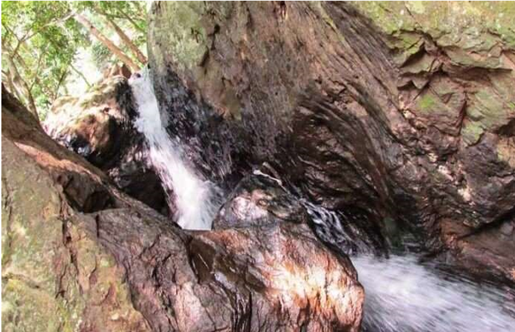
Rampa falls are located in the East Godavari district and are one of the exciting places to visit in the state. The waterfall is perched on a height of 50 feet and can be reached after a small trek of 20 minutes. Famed for being one of the best waterfalls in the state, the main takeaway of the place is that the water is shallow, making it easy for a quick shower. The falls are situated 29 km away from Maredumili, and the ideal time to access the place is from October to February.
Rampa falls are located in the East Godavari district and are one of the exciting places to visit in the state. The waterfall is perched on a height of 50 feet and can be reached after a small trek of 20 minutes. Famed for being one of the best waterfalls in the state, the main takeaway of the place is that the water is shallow, making it easy for a quick shower. The falls are situated 29 km away from Maredumili, and the ideal time to access the place is from October to February.
- Things to do in Rampa Falls: Visit the Bhupathipalem Dam 8 km away from the falls and the Shiva temple
- Ideal for: Adventure, family, friends, couple
- Ideal trip duration: 1 day
- Height: 50 feet
- Best time to visit: October-February
- How to reach: Hire a jeep from Maredumili to easily reach the falls
- Location: 29 km from Maredumili and 4 km from Rampachodavaram village
AMRUTHADHARA WATERFALLS
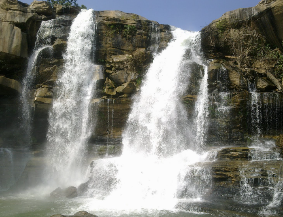
At a distance of 15 km from Maredumilli Bus Stand, Amruthadhara is a beautiful waterfall situated on Rajahmundry - Bhadrachalam Highway near Maredumilli in East Godavari district of Andhra Pradesh. It is a seasonal waterfalls and one of the must visit places in Maredumilli as part of Vizag tour packages.
Timings: 8 AM - 5 PM
Entry Fee: Rs. 20 for Person
At a distance of 15 km from Maredumilli Bus Stand, Amruthadhara is a beautiful waterfall situated on Rajahmundry - Bhadrachalam Highway near Maredumilli in East Godavari district of Andhra Pradesh. It is a seasonal waterfalls and one of the must visit places in Maredumilli as part of Vizag tour packages.
Timings: 8 AM - 5 PM
Entry Fee: Rs. 20 for Person
- Timings : 8AM - 5PM
- Entry Fee Rs.20 per person
- Things to do in Amruthadhara Falls: Sightseeing
- Ideal for: Adventure, family, friends, couple
- Ideal trip duration: 1 day
- Height: 64 meters
- Best time to visit:August-September
- How to reach: Hire a jeep from Maredumili to easily reach the falls
- Location: 15 km from the Maredumilli bus stand
NAGALAPURAM WATERFALLS
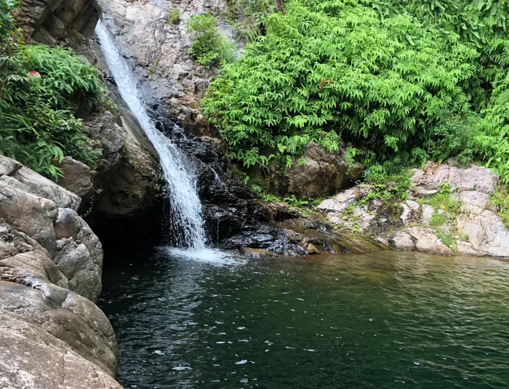
One of the attractive waterfalls in the state, the Nagalapuram falls is located in the Arai village. The scenic falls derive its name from the nearby Nagalapuram town which is like 18 km away. Famed for the gorgeous trek on its way the falls are surrounded by the dense forest that adds to its beauty. Apart from sightseeing or enjoying a cool splash at the pool next to the falls, one can also pay a visit to the nearby Vedanarayan Swamy temple.
One of the attractive waterfalls in the state, the Nagalapuram falls is located in the Arai village. The scenic falls derive its name from the nearby Nagalapuram town which is like 18 km away. Famed for the gorgeous trek on its way the falls are surrounded by the dense forest that adds to its beauty. Apart from sightseeing or enjoying a cool splash at the pool next to the falls, one can also pay a visit to the nearby Vedanarayan Swamy temple.
- Things to do in Nagalapuram Falls: Sightseeing,trekking,piligrimage
- Ideal for: Adventure, family, friends, couple
- Ideal trip duration: 1 day
- Height: 64 meters
- Best time to visit:Throughout the year, preferably monsoons
- How to reach: a taxi from Vepagunta railway station to reach the falls
- Location: 18 km from Nagalapuram town
KAILASAKONA WATERFALLS
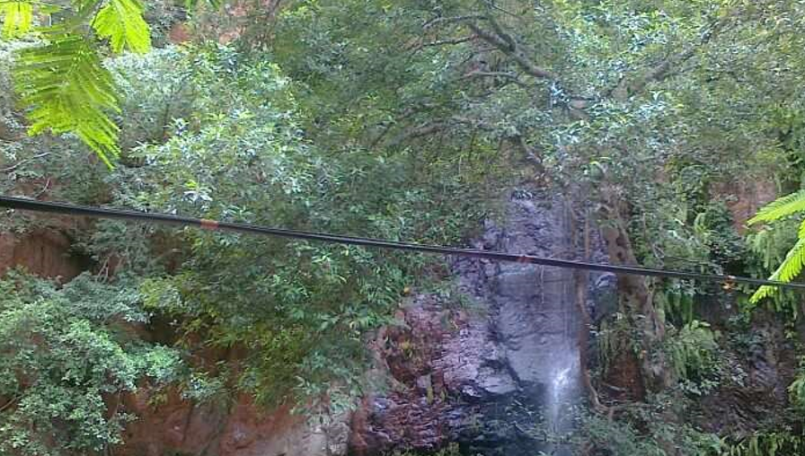
One of the major sightseeing places in Andhra Pradesh, Kailasakona waterfall juts off from a height of 40 feet. The waterfall is famed for having medicinal values and hence is regarded as sacred. The peaceful environment of the falls is awakened by the gushing sound of waters running down from the rocky terrain. An ideal day trip to the falls can be commenced all throughout the year and lying adjacent to the main waterfall are two small falls with just 4 feet and 6 feet height. Also, there is a small temple in the vicinity of the waterfall which is dedicated to Lord Shiva and Goddess Parvati.
One of the major sightseeing places in Andhra Pradesh, Kailasakona waterfall juts off from a height of 40 feet. The waterfall is famed for having medicinal values and hence is regarded as sacred. The peaceful environment of the falls is awakened by the gushing sound of waters running down from the rocky terrain. An ideal day trip to the falls can be commenced all throughout the year and lying adjacent to the main waterfall are two small falls with just 4 feet and 6 feet height. Also, there is a small temple in the vicinity of the waterfall which is dedicated to Lord Shiva and Goddess Parvati.
- Things to do in Kailasakona Falls: Sightseeing,piligrimage
- Ideal for: Adventure, family, friends, couple
- Ideal trip duration: 1 day
- Height: 40 feet
- Best time to visit:Throughout the year
- How to reach:One can hire a taxi from Puttur to reach the place
- Location: 10 km from Puttur
TALAKONA WATERFALLS
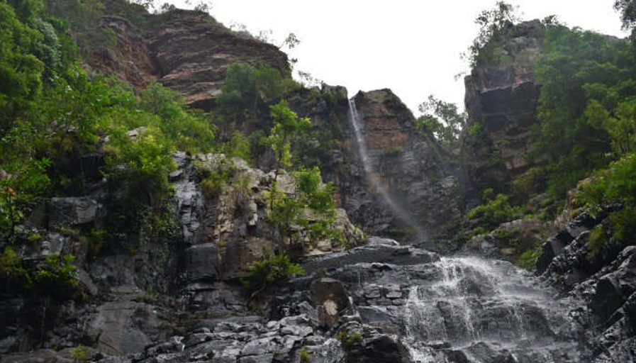
This waterfall is located very close to the Sri Venkateswara National Park and provides a remarkable sight to the visitors. The beautiful ambiance and greenery surrounding the falls amplifies its beauty by 10 folds. Perched on a height of 270 feet, the falls also are famed as one of the highest in the state. Not only that the falls have another added popularity to its fame as the start point of the Tirumala hills. One of the best places to visit in the Chittoor district, the spot also has the Lord Siddheswara Swamy temple that should not be missed at any cost.
This waterfall is located very close to the Sri Venkateswara National Park and provides a remarkable sight to the visitors. The beautiful ambiance and greenery surrounding the falls amplifies its beauty by 10 folds. Perched on a height of 270 feet, the falls also are famed as one of the highest in the state. Not only that the falls have another added popularity to its fame as the start point of the Tirumala hills. One of the best places to visit in the Chittoor district, the spot also has the Lord Siddheswara Swamy temple that should not be missed at any cost.
- Things to do in TALAKONA Falls: Sightseeing,Wildlife tour
- Ideal for: Adventure, family, friends, couple
- Ideal trip duration: 1 day
- Height: 270 feet
- Best time to visit:September-December
- How to reach:Take a bus until Chittoor and then hire a taxi to reach the place
- Location:89 km from Chittoor
UBBALAMADUGU WATERFALLS
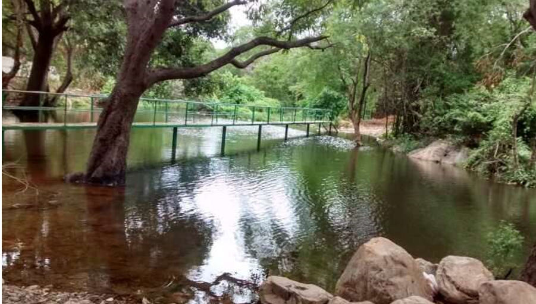
This particular waterfall is juxtaposed in between the borders of Andhra Pradesh and Tamil Nadu. The Ubbalamadugu falls come under the radar of the Chittoor district and have a certain mythological significance attached to it. Reaching the falls might be a little tough as there is a small amount of trekking involved for a total distance of 10 km. Nevertheless, that doesn’t deter the visitors from claiming the spot. Some of the best places to visit near the fall are the Shiva Temple and the waterfall is best accessed between April, July, and August.
This particular waterfall is juxtaposed in between the borders of Andhra Pradesh and Tamil Nadu. The Ubbalamadugu falls come under the radar of the Chittoor district and have a certain mythological significance attached to it. Reaching the falls might be a little tough as there is a small amount of trekking involved for a total distance of 10 km. Nevertheless, that doesn’t deter the visitors from claiming the spot. Some of the best places to visit near the fall are the Shiva Temple and the waterfall is best accessed between April, July, and August.
- Things to do in Ubbalamadugu Falls: Sightseeing,Piligrimage
- Ideal for: Adventure, family, friends, couple
- Ideal trip duration: 1 day
- Height: 100 meters
- Best time to visit:April, July, and August
- How to reach:Take a bus from Koyambedu Bus stop Vardiah Palem. From there hire a local guide and en route the 10 km trek to reach the falls
- Location:82 km from Tirupati
ETHIPOTHALA WATERFALLS
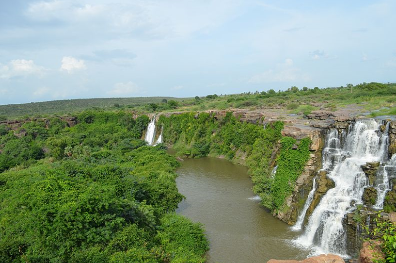
Ethipothala falls is formed from a tributary of river Krishna,Chandravakna river and is 70 ft high. The waterfall derives its name from Telugu words “Ehtu” and “Pothala” which means “Lift and pour”. It is situated 11 kms from Nagarjuna Sagar Dam. The sunset over the waterfalls makes for an amazing sight and making this one of the most beautiful waterfalls in Andhra Pradesh. It is also one of the biggest waterfalls near Vijaywada.
Ethipothala falls is formed from a tributary of river Krishna,Chandravakna river and is 70 ft high. The waterfall derives its name from Telugu words “Ehtu” and “Pothala” which means “Lift and pour”. It is situated 11 kms from Nagarjuna Sagar Dam. The sunset over the waterfalls makes for an amazing sight and making this one of the most beautiful waterfalls in Andhra Pradesh. It is also one of the biggest waterfalls near Vijaywada.
- Things to do in Ethipothala Falls: Nagarjuna Sagar dam and Ethipothala View Point
- Ideal for: Adventure, family, friends, couple
- Ideal trip duration: 1 day
- Height: 70 meters
- Best time to visit:Monsoon Season
- How to reach:You can take a bus from Hyderabad to Nagarjuna Sagar and then hire a taxi from there.
- Location:11 km from Nagarjuna Sagar Dam
MALLELA THEERATHAM WATERFALLS
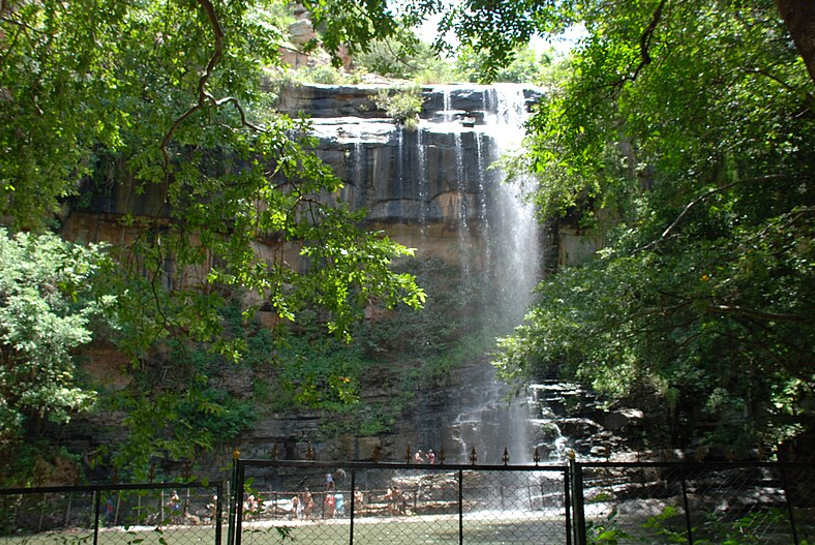
Situated in the middle of the Nallamala forest in Mahbubnagar is the Mallela Theertham waterfall. To access the waterfall, one has to descend 350 steps. The waterfall, after traversing through the dense forest, joins the Krishna river. It is said that in ancient times many sages performed penance to Lord Shiva around this waterfall. It is also a popular place for tigers to quench their thirst
Situated in the middle of the Nallamala forest in Mahbubnagar is the Mallela Theertham waterfall. To access the waterfall, one has to descend 350 steps. The waterfall, after traversing through the dense forest, joins the Krishna river. It is said that in ancient times many sages performed penance to Lord Shiva around this waterfall. It is also a popular place for tigers to quench their thirst
- Things to do in Mallela Theertham Falls: Small waterfalls near the main fall and a shiva lingam
- Ideal for: Adventure, family, friends, couple
- Ideal trip duration: 1 day
- Height:150 Feet
- Best time to visit:October-February
- How to reach:There is a bus every 30 minutes from Hyderabad to Srisailam. Get down at Vatvarlapally and take another 8km bus journey to reach the spot.
- Location:58 KMs from Srisailam and 185 KM from Hyderabad
KATIKI WATERFALLS
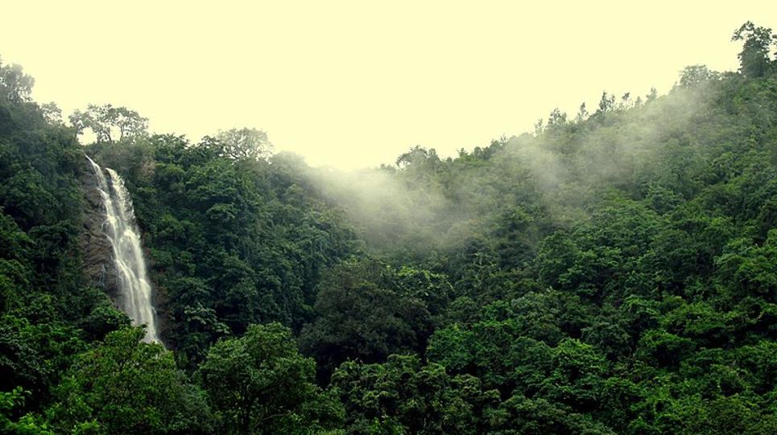
Named after the mythological figure Kaitiki, Katiki waterfall is one of the most popular waterfalls in Vizag, Andhra Pradesh. The waterfall lies near Borra caves at a distance of 4kms and is 50 ft high. To reach the waterfall, one has to undertake a 2km long trek. The waterfall originates from Ghostani river and is a sight for trekking enthusiasts. On the base of the waterfall, you can indulge in camping, barbeque, and shopping.
Named after the mythological figure Kaitiki, Katiki waterfall is one of the most popular waterfalls in Vizag, Andhra Pradesh. The waterfall lies near Borra caves at a distance of 4kms and is 50 ft high. To reach the waterfall, one has to undertake a 2km long trek. The waterfall originates from Ghostani river and is a sight for trekking enthusiasts. On the base of the waterfall, you can indulge in camping, barbeque, and shopping.
- Things to do in KATKIKI Falls:Shopping, Bamboo Chicken and Camping
- Ideal for: Adventure, family, friends, couple
- Ideal trip duration: 1 day
- Height:50 Feet
- Best time to visit:February-December
- How to reach:From Borra caves, you must take a jeep to this place
- Location:4KM from Borra Caves
KUNTALA WATERFALLS
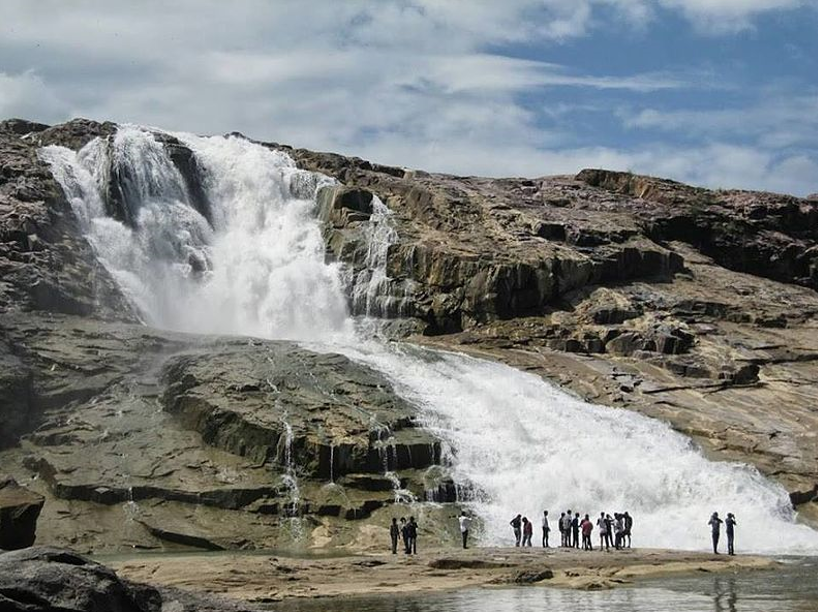
Kuntala waterfall is situated in the Adilabad district and originates from Kadam river. At 147 ft high, this is one of the highest waterfalls in Andhra Pradesh. It is a common belief that the waterfall is named after Shakuntala – mother of Bharat. The sight of the waterfall during the monsoon season is a treat to the eyes.nto the Linga, blood oozed from the Sivalinga.
Kuntala waterfall is situated in the Adilabad district and originates from Kadam river. At 147 ft high, this is one of the highest waterfalls in Andhra Pradesh. It is a common belief that the waterfall is named after Shakuntala – mother of Bharat. The sight of the waterfall during the monsoon season is a treat to the eyes.nto the Linga, blood oozed from the Sivalinga.
- Things to do in Kuntala Falls:Enjy the wonderful View
- Ideal for: Adventure, family, friends, couple
- Ideal trip duration: 1 day
- Height:147 meters
- Best time to visit:September-December
- How to reach:You can hire private jeeps from Adilabad to reach the place
- Location:58km from Adilabad Railway station
KAIGAL WATERFALLS
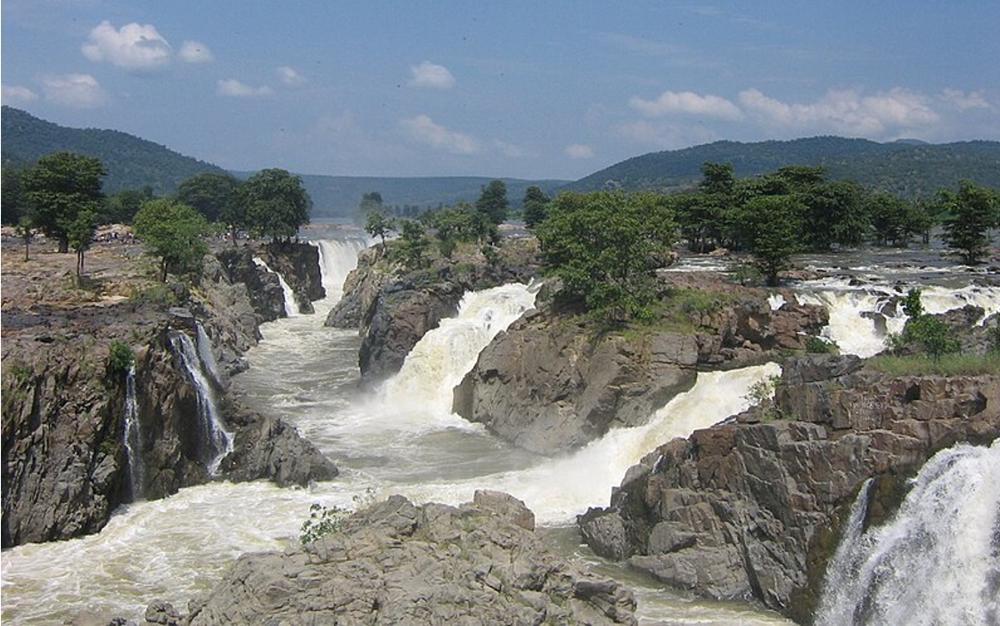
Kaigal waterfall or Dumukurallu waterfall is located in the Chittoor district and in close distance to Koundinya Wildlife Sanctuary. The waterfall is a sight for sore eyes especially during monsoon season as it offers a magnificent view. The surrounding forest of the waterfall is full of flora and fauna that is unique to this region.